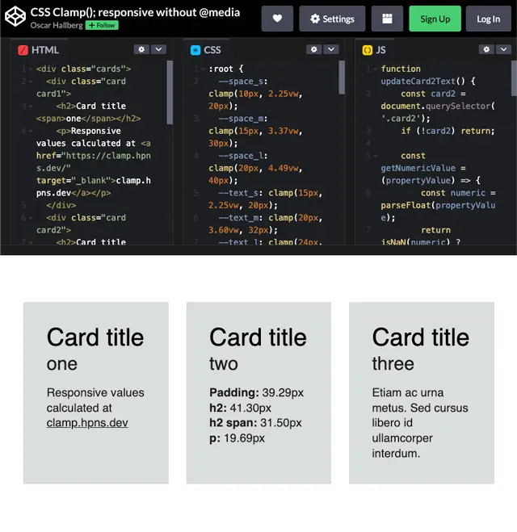

Generate Responsive Clamp Values
Breakpoint
The width of the viewport where you want the max value to be applied.
Max Value of Clamp
The maximum size, padding, margin, etc. This will be used to determine the value for the dynamic (vw) value of the clamp in relation to the breakpoint.
Please select the appropriate unit.
Min Value of Clamp
This calculation does not take into account any minimum values for the clamp.
New Max Value
- Removes the previously entered max value.
- Focuses the max value field for quick access.
- Start typing or pasting your new max value.
- The result updates automatically.
- If unsure, press the Calculate button.
Result
The calculated dynamic mid-value of the clamp in vw. The MINVALUE and MAXVALUE should be defined statically in px/rem.
padding: clamp(MINVALUE, RESULT, MAXVALUE);
Copy Button
Copies just what you need to quickly paste the dynamic value into your IDE of choice.
Rem Units
Assumes the value of rem is set to be 10% of the px size.
html {
font-size: 62.5%;
position: relative;
}
body {
font-size: 1.6rem;
}
Local Storage
All data is stored in localStorage on your local machine and not sent anywhere
Current settings
This clamp generator/calculator utilises localStorage to store the Breakpoint and Unit.
Presets
Presets for Breakpoint can be stored to localStorage, and loaded or removed from it.
FAQ (Frequently Asked Questions)
- What is CSS clamp?
- CSS clamp() is a function that allows elements to scale between a minimum and maximum value based on viewport size.
- How does the CSS Clamp Calculator work?
- The Clamp Calculator generates CSS clamp() values dynamically based on your input for breakpoints and max values, helping you create flexible, responsive designs.
- How can I use CSS clamp()?
- Use clamp() for font sizes, margins, paddings, and other CSS properties to create fluid designs without media queries.
About This Tool
The designer provides designs for desktop and mobile devices only. That is fine these days. Just use CSS clamp to scale the items to fit the various screen sizes. Gone are the numerous @media queries at seemingly random places.
This generator/calculator is as simplified as possible. Ease of use and good workflow are of essence. It assumes you already have the max and min values in place and want to get the dynamic value from the max value to smoothly scale the content.
The idea is to use the CSS Clamp Calculator to build clamps in the IDE of choice rather than pasting each value to get a full line of CSS from this tool. It could be argued that it is quicker to use a keyboard to enter values than copy-pasting multiple values into fields.
Demo of CSS Clamp()
A basic demo of using CSS Clamp() with variables (and css grid without media queries) is found at Codepen: CSS Clamp(); responsive without @media.
You will be able to see how the values changes with the viewport width and get a general understanding of the perks with CSS Clamp().

MDN Web Docs specification
Learn more about the specification and how the CSS clamp()function works.